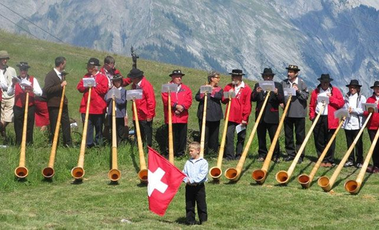
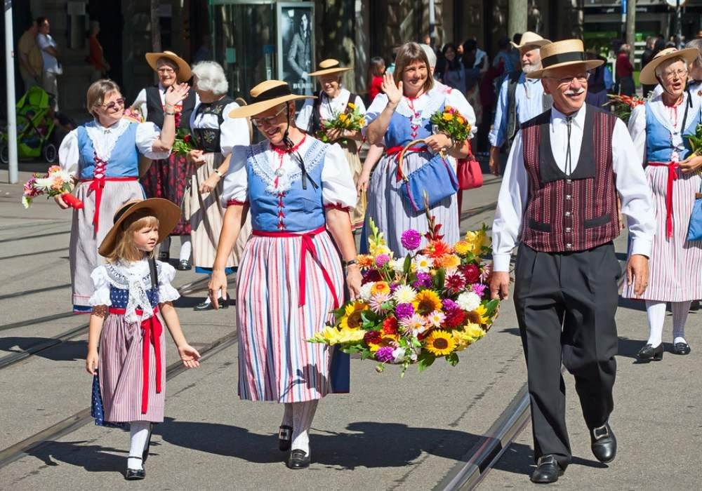
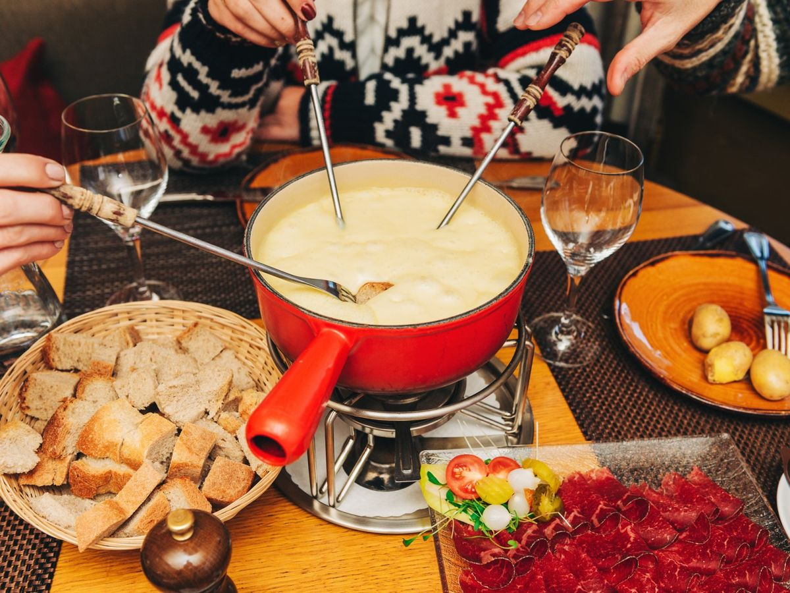
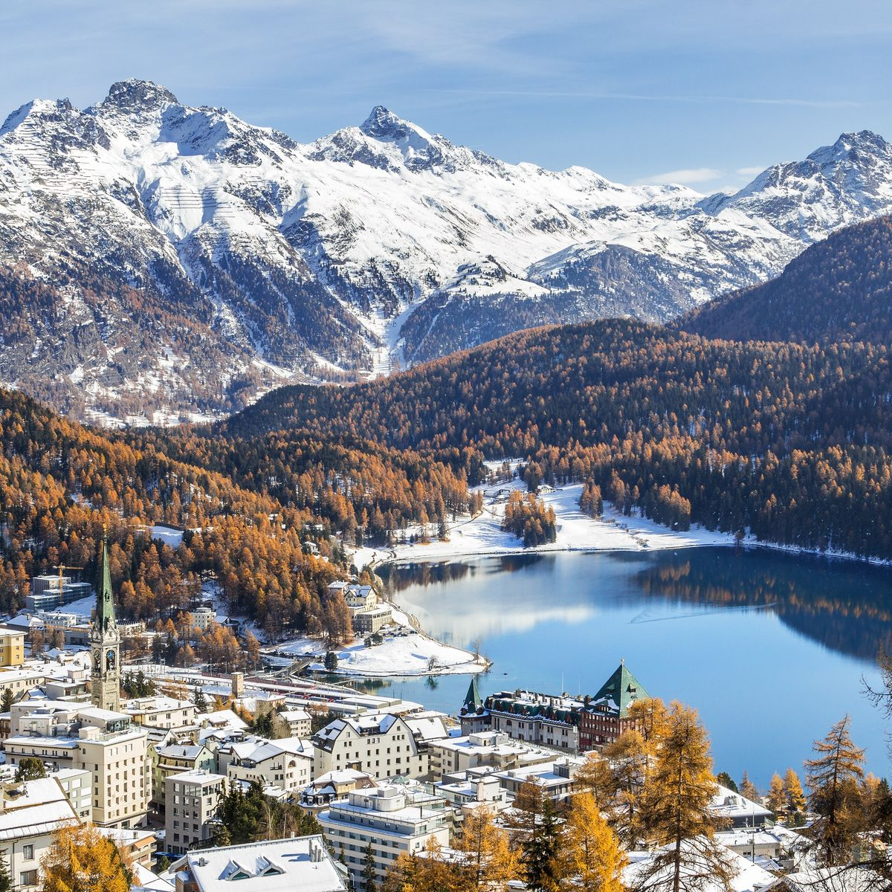

The Spirit of Switzerland
A journey through the heart of Switzerland, where every corner reveals picturesque scenery and new adventure.
Experience the Culture of Switzerland

Rich Traditions
In the heart of the Swiss Alps, the deep, resonant call of the alphorn drifts across the valleys, echoing a tradition that has connected mountain communities and celebrated Swiss heritage for centuries

Lovingly People
The citizens of Switzerland carry the heart of the nation, with grace, resilience and a welcoming spirit. Their warmth and hospitality make every journey a memorable experience, inviting you to connect with the soul of this aesthetic land.

Culinary Delights of Switzerland
wiss cuisine is deeply rooted in its rich dairy tradition, with world-famous cheeses like Gruyère and Emmental giving life to iconic dishes such as fondue and raclette. A bubbling pot of cheese fondue, shared with friends and family, perfectly captures the warmth, flavor, and alpine heritage that make Switzerland’s dairy products a global treasure.
Featured Destinations
Explore Switzerland's most spectacular locations

Interlaken
Nestled between Lake Thun and Lake Brienz, Interlaken is a paradise for outdoor enthusiasts. Known for its adventure sports, visitors can enjoy hiking, paragliding, and skiing in the surrounding mountains.

Lauterbrunnen
Lauterbrunnen is a stunning valley known for its 72 waterfalls, including the famous Staubbach Falls. The picturesque village serves as a gateway to the Jungfrau region, offering breathtaking views and hiking trails.

Lake Blausee
Lake Blausee is a picturesque alpine lake known for its crystal-clear turquoise waters and surrounding forest. Visitors can enjoy hiking trails, picnicking by the lake, or simply relaxing in this serene natural setting.

Bern
The capital city of Switzerland, Bern is known for its well-preserved medieval architecture and charming old town, a UNESCO World Heritage site. Visitors can explore the Zytglogge clock tower, the Federal Palace, and the Bear Park, or stroll along the Aare River.

St.Moritz
St. Moritz is a world-renowned luxury resort town in the Swiss Alps, famous for its winter sports and upscale amenities. Visitors can enjoy skiing, snowboarding, and ice skating in the winter, or hiking, mountain biking, and sailing in the summer.